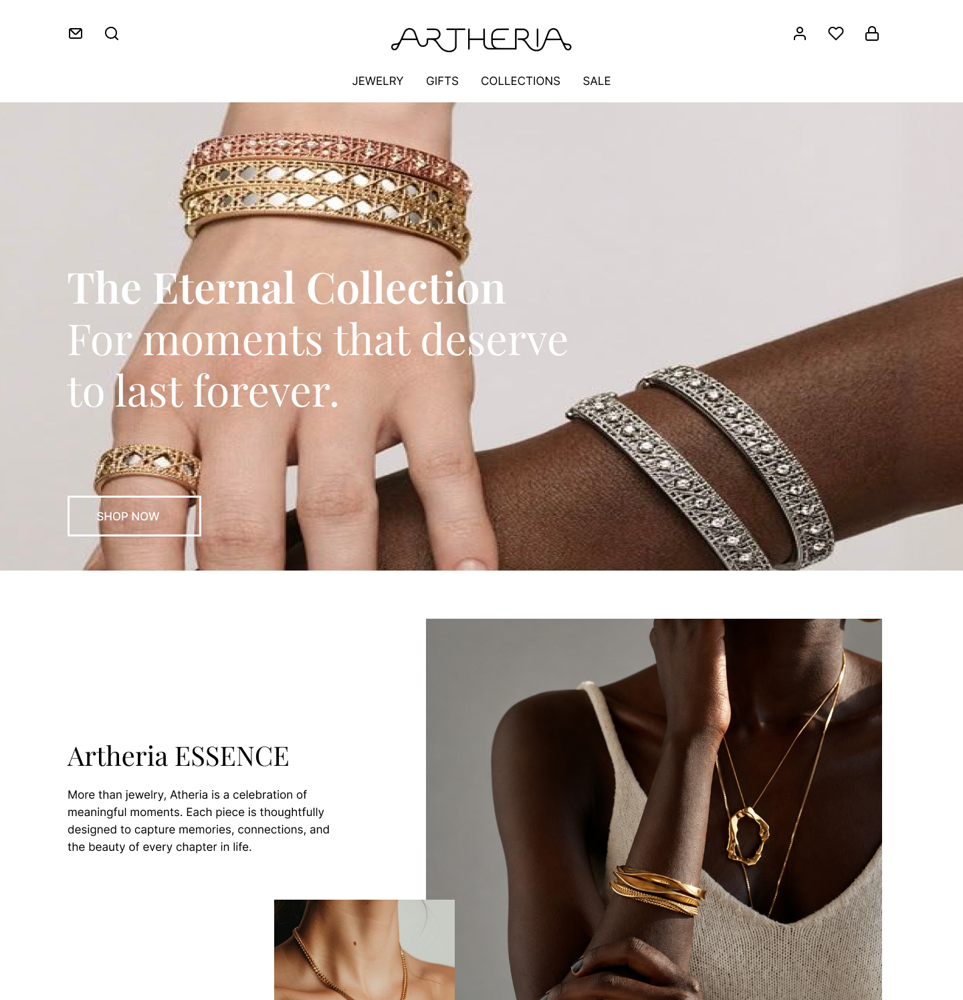
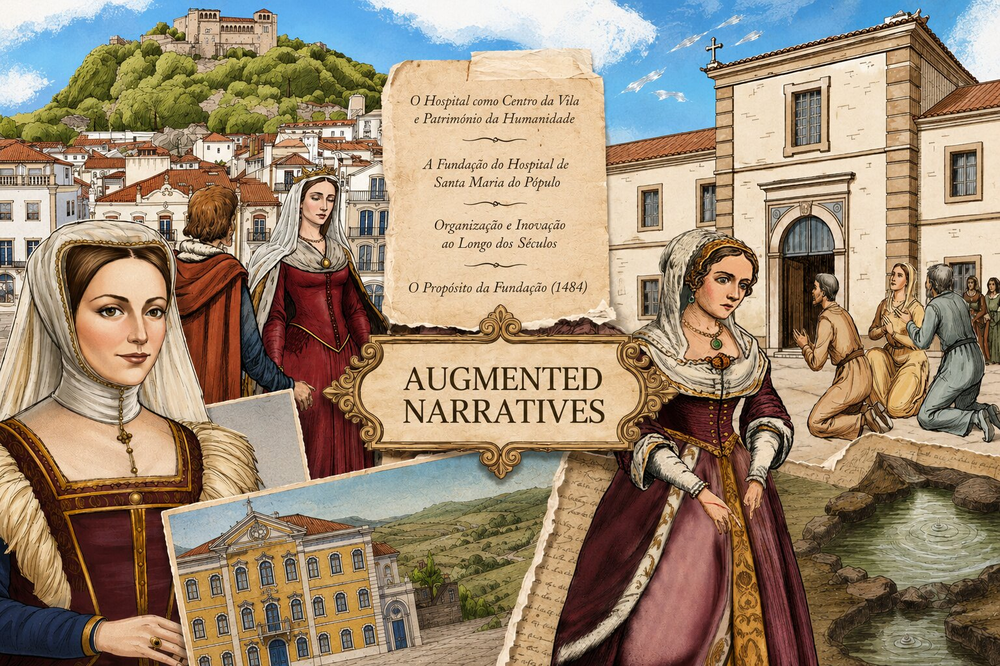
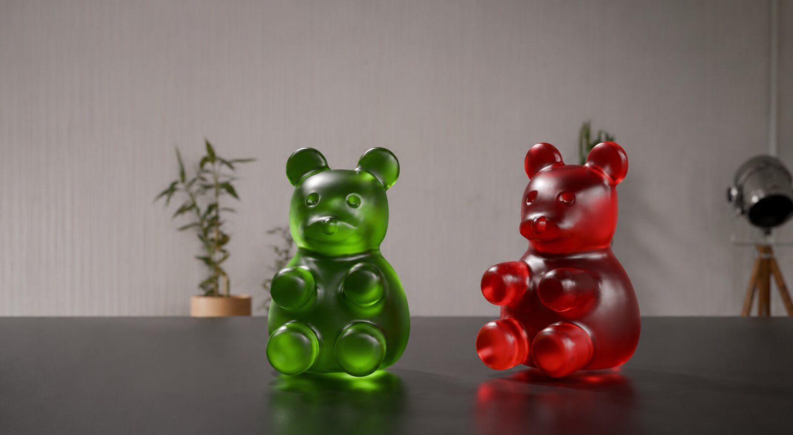
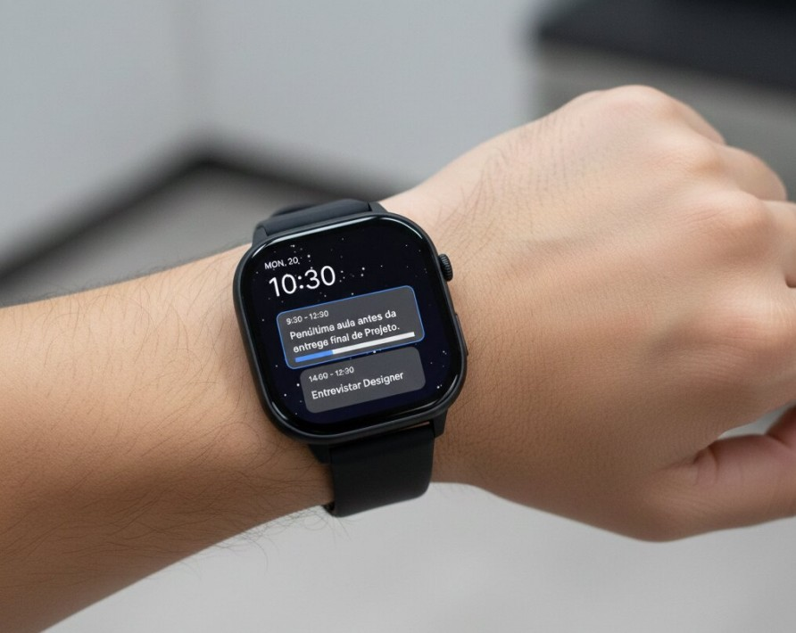

Selected Projects.
A collection of academic projects developed throughout my Graphic & Multimedia Design degree, showcasing my passion for branding, digital experiences, motion graphics, and creative coding.
Jewelry Brand Website
Website Design • Branding • UI Design
Designed and developed the visual identity and website concept for a luxury jewelry brand. The project included logo design, typography, colour palette and interface design using Figma and Adobe Illustrator.
View Project →
Augmented Reality Experience
Motion Graphics • Augmented Reality
Designed visual assets in Adobe Photoshop, animated them in After Effects and integrated the final animations into EyeJack Creator to create an interactive augmented reality experience.
View Project →
Haribo Gummies Animation
3D Animation • Motion Design
A short 3D animation inspired by Haribo Gummies exploring modelling, animation, lighting and rendering techniques using Blender.
View Project →
Creative Coding
Processing • Interactive Graphics
A collection of creative coding projects developed using Processing, exploring animation, interaction and generative visual compositions.
View Project →